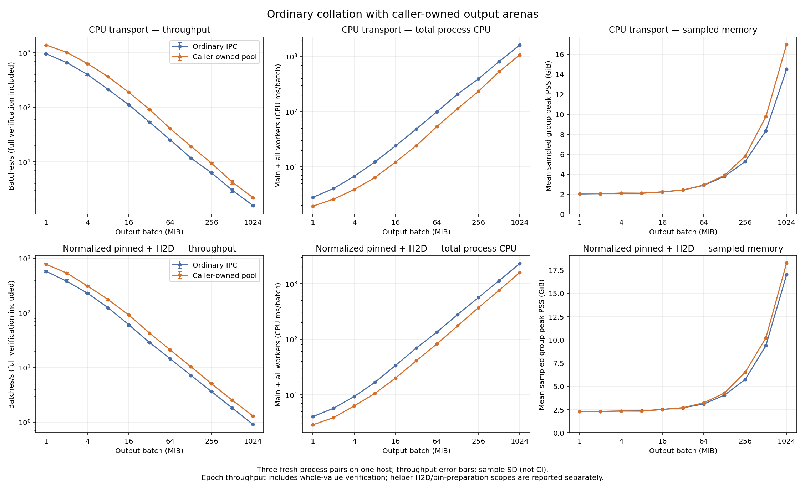

Benchmark region arena¶
Compare ordinary IPC with explicit caller-owned output arenas.
This benchmark shows how using a reusable shared-memory arena at a process
region’s output boundary affects throughput, CPU time, and memory use. It runs
with ordinary IPC (ipc) or arena-backed transport (pool or ring).
Both arms use the same private CPU collation with torch.cat or
torch.stack, so only output transport changes. See
Explicit caller-owned process-region arenas for usage, ownership, and cleanup.
Run one CPU trial, for example:
python benchmark_region_arena.py --transport ipc --size-mib 8 \
--source-commit local --output ipc
Repeat in a fresh process with --transport pool --output pool, keeping the
other settings identical. For the separate normalized pinned workflow, add
--pin-memory --h2d to both arms on a CUDA-eligible consumer.
Measured output-transport comparisons¶
The table compares ordinary IPC and a shared segment pool on the output boundary with the same float32 stack. It does not measure ring transport, direct collation, or the effect of enabling pinning by itself.

Workflow |
MiB |
IPC items/s |
SD |
Pool items/s |
SD |
Pool/IPC |
IPC CPU ms/batch |
Pool CPU ms/batch |
IPC group PSS MiB |
Pool group PSS MiB |
IPC pin prep ms |
Pool pin prep ms |
IPC H2D ms |
Pool H2D ms |
|---|---|---|---|---|---|---|---|---|---|---|---|---|---|---|
cpu |
1 |
961.593 |
10.727 |
1391.059 |
8.429 |
1.447 |
2.790 |
1.936 |
2072.906 |
2101.502 |
N/A |
N/A |
N/A |
N/A |
cpu |
2 |
663.004 |
9.193 |
1024.858 |
5.221 |
1.546 |
4.045 |
2.591 |
2105.427 |
2101.209 |
N/A |
N/A |
N/A |
N/A |
cpu |
4 |
400.170 |
8.946 |
635.073 |
1.442 |
1.587 |
6.736 |
3.879 |
2150.338 |
2163.401 |
N/A |
N/A |
N/A |
N/A |
cpu |
8 |
212.718 |
1.906 |
364.349 |
2.749 |
1.713 |
12.283 |
6.386 |
2142.099 |
2152.003 |
N/A |
N/A |
N/A |
N/A |
cpu |
16 |
111.125 |
0.808 |
187.592 |
2.670 |
1.688 |
24.012 |
12.249 |
2280.533 |
2289.528 |
N/A |
N/A |
N/A |
N/A |
cpu |
32 |
53.261 |
1.987 |
91.577 |
0.408 |
1.719 |
48.480 |
24.236 |
2472.044 |
2483.854 |
N/A |
N/A |
N/A |
N/A |
cpu |
64 |
25.215 |
0.389 |
40.452 |
0.645 |
1.604 |
99.839 |
53.847 |
2958.302 |
2990.772 |
N/A |
N/A |
N/A |
N/A |
cpu |
128 |
11.668 |
0.242 |
19.229 |
0.231 |
1.648 |
208.674 |
113.906 |
3869.001 |
3981.182 |
N/A |
N/A |
N/A |
N/A |
cpu |
256 |
6.233 |
0.047 |
9.381 |
0.209 |
1.505 |
392.927 |
233.120 |
5399.178 |
5954.711 |
N/A |
N/A |
N/A |
N/A |
cpu |
512 |
2.988 |
0.253 |
4.201 |
0.384 |
1.406 |
809.378 |
528.691 |
8539.411 |
9989.385 |
N/A |
N/A |
N/A |
N/A |
cpu |
1024 |
1.569 |
0.043 |
2.191 |
0.021 |
1.397 |
1619.297 |
1072.624 |
14844.179 |
17390.719 |
N/A |
N/A |
N/A |
N/A |
h2d |
1 |
581.856 |
16.500 |
782.544 |
24.966 |
1.345 |
4.031 |
2.870 |
2345.479 |
2331.289 |
0.234 |
0.057 |
0.192 |
0.206 |
h2d |
2 |
382.912 |
24.700 |
540.463 |
18.199 |
1.411 |
5.692 |
3.863 |
2347.831 |
2361.354 |
0.326 |
0.047 |
0.179 |
0.206 |
h2d |
4 |
231.340 |
2.916 |
314.113 |
2.522 |
1.358 |
9.288 |
6.282 |
2399.073 |
2401.553 |
0.682 |
0.044 |
0.199 |
0.237 |
h2d |
8 |
124.785 |
1.434 |
176.602 |
5.010 |
1.415 |
16.657 |
10.542 |
2410.577 |
2385.316 |
1.416 |
0.051 |
0.281 |
0.287 |
h2d |
16 |
60.925 |
4.263 |
91.750 |
2.350 |
1.506 |
33.667 |
19.959 |
2582.278 |
2564.002 |
3.103 |
0.060 |
0.472 |
0.453 |
h2d |
32 |
28.745 |
0.231 |
42.934 |
0.218 |
1.494 |
69.134 |
40.918 |
2760.592 |
2767.637 |
6.783 |
0.070 |
0.831 |
0.805 |
h2d |
64 |
14.497 |
0.134 |
21.020 |
0.081 |
1.450 |
134.353 |
82.306 |
3172.829 |
3309.278 |
13.974 |
0.078 |
1.456 |
1.426 |
h2d |
128 |
7.187 |
0.083 |
10.350 |
0.117 |
1.440 |
277.917 |
173.878 |
4150.282 |
4386.985 |
29.136 |
0.087 |
2.728 |
2.718 |
h2d |
256 |
3.611 |
0.041 |
5.036 |
0.061 |
1.394 |
560.158 |
368.678 |
5879.460 |
6666.470 |
58.206 |
0.090 |
5.199 |
5.193 |
h2d |
512 |
1.804 |
0.009 |
2.514 |
0.005 |
1.394 |
1130.811 |
755.133 |
9597.625 |
10449.500 |
115.737 |
0.100 |
10.112 |
10.102 |
h2d |
1024 |
0.903 |
0.011 |
1.294 |
0.013 |
1.433 |
2290.033 |
1585.558 |
17403.425 |
18696.734 |
231.780 |
0.122 |
19.920 |
19.915 |
Column legend. Items/s divides verified batches by summed timed epoch durations, including generation, collation, transport, restoration, and full value checks, but not setup, warmup, or teardown. SD is the sample standard deviation across three fresh paired trials, not a confidence interval; Pool/IPC is the ratio of mean throughput.
CPU rows use unpinned transport with host-to-device transfer off. In the
separate H2D workflow the IPC consumer normalizes input with pin_memory(),
which may allocate a timed host copy; the pool uses registered shared backing.
Only output is pinned. CPU producers remain CUDA-uninitialized. Pin prep and
H2D are mean helper wall times per batch. H2D includes traversal, checks, and
synchronization, not pure DMA; full CPU and GPU-return value checks are in the
epoch time, outside the transfer helper. Overlapping phases are not additive.
N/A means pinning or transfer was not run.
Group CPU sums the main process and both reported workers over the enclosing interval, including possible prefetch and between-epoch work, then divides by verified batches. Helper processes are excluded. Group PSS is the mean peak of simultaneous process-group samples taken every 100 ms, not a sum of independent peaks or an atomic peak. Cgroup memory is separate and may include other work. Configured payload capacity excludes control and header mappings and is not residency. Unavailable telemetry is not reported as zero.
What these examples show¶
In every one of the 22 measured cells, each pool trial was faster than each IPC trial. CPU-transport throughput is 1.397 to 1.719 times IPC (highest at 8–32 MiB) with 0.500 to 0.694 times the CPU per batch. In the normalized pinned/H2D workflow throughput is 1.345 to 1.506 times IPC with 0.592 to 0.712 times the CPU per batch.
The cost is memory at large batches. Up to 64 MiB, CPU-transport group PSS differs by at most 1.4%; normalized H2D stays within about 1% through 32 MiB and is 4.3% higher at 64 MiB. Pool is then higher: for CPU transport 17.0% at 512 MiB and 17.2% at 1024 MiB (17390.719 versus 14844.179 MiB), and for H2D 13.4% at 256 MiB.
With normalized H2D at 1 GiB, IPC pin preparation is 231.780 ms/batch versus 0.122 ms for pool, while the transfer helper is 19.920 and 19.915 ms. This is a staging-policy workflow comparison, not a pure device-transfer gain.
Three repetitions on one host do not establish statistical significance, an all-workload speedup or a training/fleet-cost conclusion; retain the sample SD and memory tradeoff. The 1 GiB cells ran only three to five epochs.
Measurement configuration¶
The 132 measured trials used float32 stack, two workers, one-item boundary buffering, two pool slots per worker, four parts and sixteen rows. Each trial checked one excluded warmup and measured at least three epochs of eight batches for a minimum 15-second enclosing interval. Sizes were powers of two from 1 to 1024 MiB. Arm order rotated across three fresh process pairs on the same host, using one of the job’s two reserved GPUs. Four initial 8 MiB gate trials are excluded from the table. CPU and normalized-H2D populations contain 279,336 and 154,080 fully verified measured batches respectively. All 264 reported worker PIDs were confirmed absent after their trials exited.
The synthetic payloads use no data-storage service. Full values are checked, not serialized in the timing receipts. These results describe the measured revision; later edits to the example are not new measurements. Absolute throughput is not directly comparable to the direct-collation example, which has a different input-generation and verification workload.
Source¶
Source
Click here to see the source.
1# Copyright (c) Meta Platforms, Inc. and affiliates.
2# All rights reserved.
3#
4# This source code is licensed under the BSD-style license found in the
5# LICENSE file in the root directory of this source tree.
6
7r"""Compare ordinary IPC with explicit caller-owned output arenas.
8
9This benchmark shows how using a reusable shared-memory arena at a process
10region's output boundary affects throughput, CPU time, and memory use. It runs
11with ordinary IPC (``ipc``) or arena-backed transport (``pool`` or ``ring``).
12Both arms use the same private CPU collation with ``torch.cat`` or
13``torch.stack``, so only output transport changes. See
14:ref:`transparent-region-arenas` for usage, ownership, and cleanup.
15
16Run one CPU trial, for example::
17
18 python benchmark_region_arena.py --transport ipc --size-mib 8 \
19 --source-commit local --output ipc
20
21Repeat in a fresh process with ``--transport pool --output pool``, keeping the
22other settings identical. For the separate normalized pinned workflow, add
23``--pin-memory --h2d`` to both arms on a CUDA-eligible consumer.
24
25.. _region-arena-benchmark-results:
26
27Measured output-transport comparisons
28-------------------------------------
29
30The table compares ordinary IPC and a shared segment pool on the output
31boundary with the same float32 stack. It does not measure ring transport,
32direct collation, or the effect of enabling pinning by itself.
33
34.. image:: /_static/data/region_arena_object_results.png
35 :alt: IPC and pool throughput, total process CPU and process-group PSS for
36 separate CPU and normalized H2D workflows
37
38.. csv-table:: Caller-owned output transport, three paired process repetitions
39 :header-rows: 1
40
41 Workflow,MiB,IPC items/s,SD,Pool items/s,SD,Pool/IPC,IPC CPU ms/batch,Pool CPU ms/batch,IPC group PSS MiB,Pool group PSS MiB,IPC pin prep ms,Pool pin prep ms,IPC H2D ms,Pool H2D ms
42 cpu,1,961.593,10.727,1391.059,8.429,1.447,2.790,1.936,2072.906,2101.502,N/A,N/A,N/A,N/A
43 cpu,2,663.004,9.193,1024.858,5.221,1.546,4.045,2.591,2105.427,2101.209,N/A,N/A,N/A,N/A
44 cpu,4,400.170,8.946,635.073,1.442,1.587,6.736,3.879,2150.338,2163.401,N/A,N/A,N/A,N/A
45 cpu,8,212.718,1.906,364.349,2.749,1.713,12.283,6.386,2142.099,2152.003,N/A,N/A,N/A,N/A
46 cpu,16,111.125,0.808,187.592,2.670,1.688,24.012,12.249,2280.533,2289.528,N/A,N/A,N/A,N/A
47 cpu,32,53.261,1.987,91.577,0.408,1.719,48.480,24.236,2472.044,2483.854,N/A,N/A,N/A,N/A
48 cpu,64,25.215,0.389,40.452,0.645,1.604,99.839,53.847,2958.302,2990.772,N/A,N/A,N/A,N/A
49 cpu,128,11.668,0.242,19.229,0.231,1.648,208.674,113.906,3869.001,3981.182,N/A,N/A,N/A,N/A
50 cpu,256,6.233,0.047,9.381,0.209,1.505,392.927,233.120,5399.178,5954.711,N/A,N/A,N/A,N/A
51 cpu,512,2.988,0.253,4.201,0.384,1.406,809.378,528.691,8539.411,9989.385,N/A,N/A,N/A,N/A
52 cpu,1024,1.569,0.043,2.191,0.021,1.397,1619.297,1072.624,14844.179,17390.719,N/A,N/A,N/A,N/A
53 h2d,1,581.856,16.500,782.544,24.966,1.345,4.031,2.870,2345.479,2331.289,0.234,0.057,0.192,0.206
54 h2d,2,382.912,24.700,540.463,18.199,1.411,5.692,3.863,2347.831,2361.354,0.326,0.047,0.179,0.206
55 h2d,4,231.340,2.916,314.113,2.522,1.358,9.288,6.282,2399.073,2401.553,0.682,0.044,0.199,0.237
56 h2d,8,124.785,1.434,176.602,5.010,1.415,16.657,10.542,2410.577,2385.316,1.416,0.051,0.281,0.287
57 h2d,16,60.925,4.263,91.750,2.350,1.506,33.667,19.959,2582.278,2564.002,3.103,0.060,0.472,0.453
58 h2d,32,28.745,0.231,42.934,0.218,1.494,69.134,40.918,2760.592,2767.637,6.783,0.070,0.831,0.805
59 h2d,64,14.497,0.134,21.020,0.081,1.450,134.353,82.306,3172.829,3309.278,13.974,0.078,1.456,1.426
60 h2d,128,7.187,0.083,10.350,0.117,1.440,277.917,173.878,4150.282,4386.985,29.136,0.087,2.728,2.718
61 h2d,256,3.611,0.041,5.036,0.061,1.394,560.158,368.678,5879.460,6666.470,58.206,0.090,5.199,5.193
62 h2d,512,1.804,0.009,2.514,0.005,1.394,1130.811,755.133,9597.625,10449.500,115.737,0.100,10.112,10.102
63 h2d,1024,0.903,0.011,1.294,0.013,1.433,2290.033,1585.558,17403.425,18696.734,231.780,0.122,19.920,19.915
64
65**Column legend.** Items/s divides verified batches by summed timed epoch
66durations, including generation, collation, transport, restoration, and full
67value checks, but not setup, warmup, or teardown. SD is the sample standard
68deviation across three fresh paired trials, not a confidence interval;
69Pool/IPC is the ratio of mean throughput.
70
71CPU rows use unpinned transport with host-to-device transfer off. In the
72separate H2D workflow the IPC consumer normalizes input with ``pin_memory()``,
73which may allocate a timed host copy; the pool uses registered shared backing.
74Only output is pinned. CPU producers remain CUDA-uninitialized. Pin prep and
75H2D are mean helper wall times per batch. H2D includes traversal, checks, and
76synchronization, not pure DMA; full CPU and GPU-return value checks are in the
77epoch time, outside the transfer helper. Overlapping phases are not additive.
78``N/A`` means pinning or transfer was not run.
79
80Group CPU sums the main process and both reported workers over the enclosing
81interval, including possible prefetch and between-epoch work, then divides by
82verified batches. Helper processes are excluded. Group PSS is the mean peak
83of simultaneous process-group samples taken every 100 ms, not a sum of
84independent peaks or an atomic peak. Cgroup memory is separate and may include
85other work. Configured payload capacity excludes control and header mappings
86and is not residency. Unavailable telemetry is not reported as zero.
87
88What these examples show
89~~~~~~~~~~~~~~~~~~~~~~~~
90
91- In every one of the 22 measured cells, each pool trial was faster than each
92 IPC trial. CPU-transport throughput is 1.397 to 1.719 times IPC (highest at
93 8–32 MiB) with 0.500 to 0.694 times the CPU per batch. In the normalized
94 pinned/H2D workflow throughput is 1.345 to 1.506 times IPC with 0.592 to 0.712
95 times the CPU per batch.
96- The cost is memory at large batches. Up to 64 MiB, CPU-transport group PSS
97 differs by at most 1.4%; normalized H2D stays within about 1% through 32 MiB
98 and is 4.3% higher at 64 MiB. Pool is then higher: for CPU transport 17.0% at
99 512 MiB and 17.2% at 1024 MiB (17390.719 versus 14844.179 MiB), and for H2D
100 13.4% at 256 MiB.
101- With normalized H2D at 1 GiB, IPC pin preparation is 231.780 ms/batch versus
102 0.122 ms for pool, while the transfer helper is 19.920 and 19.915 ms. This is
103 a staging-policy workflow comparison, not a pure device-transfer gain.
104- Three repetitions on one host do not establish statistical significance, an
105 all-workload speedup or a training/fleet-cost conclusion; retain the sample SD
106 and memory tradeoff. The 1 GiB cells ran only three to five epochs.
107
108Measurement configuration
109~~~~~~~~~~~~~~~~~~~~~~~~~
110
111The 132 measured trials used float32 stack, two workers, one-item boundary
112buffering, two pool slots per worker, four parts and sixteen rows. Each trial
113checked one excluded warmup and measured at least three epochs of eight batches
114for a minimum 15-second enclosing interval. Sizes were powers of two from 1 to
1151024 MiB. Arm order rotated across three fresh process pairs on the same host,
116using one of the job's two reserved GPUs. Four initial 8 MiB gate trials are
117excluded from the table. CPU and normalized-H2D populations contain 279,336 and
118154,080 fully verified measured batches respectively. All 264 reported worker
119PIDs were confirmed absent after their trials exited.
120
121The synthetic payloads use no data-storage service. Full values are checked,
122not serialized in the timing receipts. These results describe the measured
123revision; later edits to the example are not new measurements. Absolute
124throughput is not directly comparable to the direct-collation example, which
125has a different input-generation and verification workload.
126
127
128"""
129
130from __future__ import annotations
131
132import argparse
133import csv
134import gc
135import json
136import math
137import multiprocessing as mp
138import os
139import platform
140import threading
141import time
142from collections.abc import Iterator
143from dataclasses import dataclass
144from functools import partial
145from pathlib import Path
146from typing import Any
147
148import numpy as np
149import torch
150from spdl.io import transfer_tensor_h2d
151from spdl.pipeline import (
152 build_pipeline,
153 PipelineBuilder,
154 SharedMemoryRingBuffer,
155 SharedMemorySegmentPool,
156)
157from spdl.pipeline.defs import MAIN_PROCESS, ProcessPoolExecutorConfig
158
159__all__ = ["make_parts", "worker", "verify_batch", "run_epoch", "run_benchmark", "main"]
160
161
162@dataclass(frozen=True)
163class _Batches:
164 count: int
165
166 def __iter__(self) -> Iterator[int]:
167 yield from range(self.count)
168
169
170def make_parts(
171 index: int, *, parts: int, rows: int, columns: int, dtype: str
172) -> list[torch.Tensor]:
173 """Create fresh deterministic CPU inputs for an ordinary collation stage.
174
175 Args:
176 index: Batch identifier, used in each part's repeated value.
177 parts: Positive number of input tensors.
178 rows: Positive rows per part.
179 columns: Positive columns per part.
180 dtype: ``float16``, ``float32``, ``float64`` or ``uint8``.
181
182 Returns:
183 Fresh tensors, with part ``i`` filled by ``(index + i) % 251``.
184 For example, ``make_parts(7, parts=2, rows=2, columns=3, dtype="uint8")``
185 creates two 2-by-3 inputs without caching another batch's data.
186 """
187 if min(parts, rows, columns) <= 0 or dtype not in (
188 "float16",
189 "float32",
190 "float64",
191 "uint8",
192 ):
193 raise ValueError("Positive dimensions and a supported CPU dtype are required")
194 return [
195 torch.full((rows, columns), (index + part) % 251, dtype=getattr(torch, dtype))
196 for part in range(parts)
197 ]
198
199
200def worker(
201 index: int, *, parts: int, rows: int, columns: int, dtype: str, op: str
202) -> dict[str, Any]:
203 """Collate a fresh private CPU batch, identically for every transport arm.
204
205 Args:
206 index: Unique batch identifier.
207 parts: Input tensor count.
208 rows: Rows in each part.
209 columns: Columns in each part.
210 dtype: Supported CPU dtype name.
211 op: ``cat`` or ``stack``, using the ordinary allocating Torch operation.
212
213 Returns:
214 Identifier, normal collated tensor, actual producer PID and observed
215 CPU-only producer state. For example, ``worker(7, parts=2, rows=2,
216 columns=3, dtype="float32", op="cat")`` creates a 4-by-3 tensor.
217 No destination reservation, ``out=`` or allocation ticket is involved.
218 """
219 inputs = make_parts(index, parts=parts, rows=rows, columns=columns, dtype=dtype)
220 if op == "cat":
221 value = torch.cat(inputs)
222 elif op == "stack":
223 value = torch.stack(inputs)
224 else:
225 raise ValueError("Operation must be cat or stack")
226 if torch.cuda.is_initialized():
227 raise RuntimeError("CPU region producer unexpectedly initialized CUDA")
228 return {
229 "index": index,
230 "value": value,
231 "producer_pid": os.getpid(),
232 "producer_cuda_initialized": False,
233 }
234
235
236def verify_batch(
237 batch: dict[str, Any], args: argparse.Namespace, value: torch.Tensor | None = None
238) -> torch.Tensor:
239 """Reconstruct and verify the entire received CPU batch, shape, dtype and proof.
240
241 Args:
242 batch: Ordinary result dictionary from :py:func:`worker`.
243 args: Parts, rows, columns, dtype and operation dimensions.
244 value: Optional prepared pinned tensor; otherwise validate the received tensor.
245
246 Returns:
247 The independently reconstructed expected tensor, for optional full-value
248 GPU verification. ``verify_batch(worker(...), args)`` verifies a complete
249 batch; this work remains inside the measured epoch.
250
251 Raises:
252 RuntimeError: Any value, shape, dtype or CPU producer evidence differs.
253 """
254 if (
255 batch.get("producer_cuda_initialized") is not False
256 or type(batch.get("producer_pid")) is not int
257 ):
258 raise RuntimeError("Region result lacks actual CPU producer evidence")
259 inputs = make_parts(
260 batch["index"],
261 parts=args.parts,
262 rows=args.rows,
263 columns=args.columns,
264 dtype=args.dtype,
265 )
266 expected = torch.cat(inputs) if args.op == "cat" else torch.stack(inputs)
267 actual = batch["value"] if value is None else value
268 if (
269 actual.dtype != expected.dtype
270 or actual.shape != expected.shape
271 or not torch.equal(actual, expected)
272 ):
273 raise RuntimeError("Region collation content/shape/dtype mismatch")
274 return expected
275
276
277def _prepare(
278 value: torch.Tensor, args: argparse.Namespace, warmup: bool
279) -> tuple[torch.Tensor, float, bool]:
280 if not args.pin_memory:
281 return value, 0.0, False
282 start = time.perf_counter()
283 original = value.data_ptr()
284 if args.transport == "ipc":
285 value = value.pin_memory()
286 elif not value.is_pinned():
287 raise RuntimeError("Requested pinned arena restored unpinned storage")
288 if not value.is_pinned():
289 raise RuntimeError("Public pin normalization did not produce pinned storage")
290 elapsed = time.perf_counter() - start
291 copied = value.data_ptr() != original
292 if warmup:
293 alias = value.pin_memory()
294 if alias.data_ptr() != value.data_ptr():
295 raise RuntimeError("Prepared pinned storage was not reused by pin_memory")
296 return value, elapsed, copied
297
298
299def run_epoch(
300 pipeline: Any, args: argparse.Namespace, *, warmup: bool = False
301) -> dict[str, Any]:
302 """Consume and fully verify one epoch with explicitly scoped public preparation.
303
304 Args:
305 pipeline: Started public pipeline producing ordinary collated batches.
306 args: Count, dimensions, transport, pinning and optional H2D controls.
307 warmup: Check pin alias identity in the excluded warmup only.
308
309 Returns:
310 Epoch/first-result wall time, actual checked batch and producer PID counts,
311 public pin-preparation time, observed normalization-copy count and optional
312 H2D helper time. Use ``run_epoch(pipeline, args)`` for a timed epoch.
313 CPU reconstruction and GPU return-value verification are included in epoch
314 time; H2D helper time includes public completion, not pure DMA bandwidth.
315 """
316 start, first = time.perf_counter(), None
317 seen: set[int] = set()
318 producers: set[int] = set()
319 pin_s, h2d_s, copied = 0.0, 0.0, 0
320 for batch in pipeline.get_iterator(timeout=120):
321 if first is None:
322 first = time.perf_counter()
323 index = batch["index"]
324 if index in seen:
325 raise RuntimeError("Region benchmark duplicate batch")
326 value, preparation, normalized_copy = _prepare(batch["value"], args, warmup)
327 expected = verify_batch(batch, args, value)
328 seen.add(index)
329 producers.add(batch["producer_pid"])
330 pin_s += preparation
331 copied += int(normalized_copy)
332 if args.h2d:
333 before = time.perf_counter()
334 device = transfer_tensor_h2d(value, num_caches=0)
335 torch.cuda.synchronize()
336 h2d_s += time.perf_counter() - before
337 if not torch.equal(device.cpu(), expected):
338 raise RuntimeError("Public H2D whole-value mismatch")
339 del device
340 del batch, value, expected
341 if seen != set(range(args.batches)) or first is None:
342 raise RuntimeError("Region benchmark missing or extra batches")
343 return {
344 "elapsed_s": time.perf_counter() - start,
345 "first_result_s": first - start,
346 "items": len(seen),
347 "producer_pids": sorted(producers),
348 "pin_prepare_s": pin_s if args.pin_memory else None,
349 "pin_checked_batches": len(seen) if args.pin_memory else 0,
350 "normalization_copied_batches": copied,
351 "h2d_helper_s": h2d_s if args.h2d else None,
352 }
353
354
355def _initializer(pids: Any) -> None:
356 torch.set_num_threads(1)
357 if torch.cuda.is_initialized():
358 raise RuntimeError("CPU producer initializer unexpectedly initialized CUDA")
359 pids.put(os.getpid())
360
361
362def _cpu(pid: int) -> tuple[int, float] | None:
363 try:
364 fields = Path(f"/proc/{pid}/stat").read_text().rsplit(")", 1)[1].split()
365 return int(fields[19]), (int(fields[11]) + int(fields[12])) / os.sysconf(
366 "SC_CLK_TCK"
367 )
368 except (OSError, ValueError, IndexError):
369 return None
370
371
372def _worker_cpu(
373 before: list[tuple[int, float] | None], after: list[tuple[int, float] | None]
374) -> float | None:
375 if any(value is None for value in before + after):
376 return None
377 total = 0.0
378 for old, new in zip(before, after, strict=True):
379 assert old is not None and new is not None
380 if old[0] != new[0]:
381 raise RuntimeError(
382 "Reported worker PID identity changed during measurement"
383 )
384 total += new[1] - old[1]
385 return total
386
387
388def _pss(pid: int) -> int | None:
389 try:
390 for line in Path(f"/proc/{pid}/smaps_rollup").read_text().splitlines():
391 if line.startswith("Pss:"):
392 return int(line.split()[1]) * 1024
393 except (OSError, ValueError):
394 return None
395 return None
396
397
398def _cgroup() -> Path | None:
399 try:
400 for line in Path("/proc/self/cgroup").read_text().splitlines():
401 if line.startswith("0::"):
402 path = (
403 Path("/sys/fs/cgroup")
404 / line.split("::", 1)[1].lstrip("/")
405 / "memory.current"
406 )
407 if path.is_file():
408 return path
409 except OSError:
410 return None
411 return None
412
413
414class _MemorySampler:
415 def __init__(self, pids: list[int]) -> None:
416 self.pids = pids
417 self.group_pss_peak_bytes: int | None = None
418 self.cgroup_peak_bytes: int | None = None
419 self.samples = 0
420 self._path = _cgroup()
421 self._stop = threading.Event()
422 self._thread = threading.Thread(target=self._run, daemon=True)
423
424 def _sample(self) -> None:
425 values = [_pss(pid) for pid in self.pids]
426 if all(value is not None for value in values):
427 self.group_pss_peak_bytes = max(
428 self.group_pss_peak_bytes or 0,
429 sum(value for value in values if value is not None),
430 )
431 if self._path is not None:
432 try:
433 value = int(self._path.read_text())
434 self.cgroup_peak_bytes = max(self.cgroup_peak_bytes or 0, value)
435 except (OSError, ValueError):
436 pass
437 self.samples += 1
438
439 def _run(self) -> None:
440 while not self._stop.wait(0.1):
441 self._sample()
442
443 def __enter__(self) -> _MemorySampler:
444 self._sample()
445 self._thread.start()
446 return self
447
448 def __exit__(self, *exc: Any) -> None:
449 self._stop.set()
450 self._thread.join()
451 self._sample()
452
453
454def _retire_caller_arenas(
455 arenas: tuple[object, ...], primary: BaseException | None = None
456) -> None:
457 failure = primary
458 for arena in arenas:
459 assert isinstance(arena, (SharedMemorySegmentPool, SharedMemoryRingBuffer))
460 try:
461 arena.close()
462 arena.unlink()
463 except Exception as error:
464 if failure is None:
465 failure = error
466 else:
467 failure.add_note(f"Caller arena cleanup also failed: {error!r}")
468 if primary is None and failure is not None:
469 raise failure
470
471
472def _arena_objects(args: argparse.Namespace) -> tuple[object, ...]:
473 if args.transport == "ipc":
474 return ()
475 unit = (args.size_mib << 20) * args.buffer_size + 4096
476 objects: list[object] = []
477 try:
478 for _ in range(args.workers):
479 arena = (
480 SharedMemorySegmentPool(
481 unit, args.slots, acquire_timeout=30, pin_memory=args.pin_memory
482 )
483 if args.transport == "pool"
484 else SharedMemoryRingBuffer(
485 unit * args.slots, acquire_timeout=30, pin_memory=args.pin_memory
486 )
487 )
488 objects.append(arena)
489 return tuple(objects)
490 except BaseException as error:
491 _retire_caller_arenas(tuple(objects), error)
492 raise
493
494
495def _close_caller_arenas(arenas: tuple[object, ...], pids: list[int]) -> None:
496 if not arenas:
497 return
498 if os.name != "posix" or len(set(pids)) != len(arenas) or len(pids) != len(arenas):
499 raise RuntimeError("Worker reap cannot be confirmed; caller arenas retained")
500 for pid in pids:
501 if type(pid) is not int or pid <= 0:
502 raise RuntimeError("Invalid worker PID; caller arenas retained")
503 try:
504 os.kill(pid, 0)
505 except ProcessLookupError:
506 continue
507 except OSError as error:
508 raise RuntimeError(
509 f"Worker PID {pid} reap cannot be confirmed; caller arenas retained"
510 ) from error
511 raise RuntimeError(f"Worker PID {pid} still exists; caller arenas retained")
512 _retire_caller_arenas(arenas)
513
514
515def run_benchmark(args: argparse.Namespace) -> dict[str, Any]:
516 """Run one borrowed output-arena trial with matched ordinary CPU collation.
517
518 Args:
519 args: CLI dimensions, public IPC/pool/ring choice, repetition/time bounds
520 and optional pinned H2D workflow. ``runs`` counts timed epochs, not
521 independent trials; obtain an equivalent Namespace through :py:func:`main`.
522
523 Returns:
524 Fully checked timing, main/all-reported-worker CPU, sampled group PSS and
525 separate cgroup memory. One warmup is excluded. For comparison, repeat
526 fresh invocations with identical dimensions/resources and rotate arm order.
527 This entrypoint never launches infrastructure jobs or performance sweeps.
528 """
529 if args.transport != "ipc" and os.name != "posix":
530 raise ValueError("Caller-owned arena trials require POSIX worker PID checks")
531 if (
532 args.parts * args.rows * args.columns * getattr(torch, args.dtype).itemsize
533 != args.size_mib << 20
534 ):
535 raise ValueError("Dimensions do not match configured output byte size")
536 context = mp.get_context("spawn")
537 reports = context.Queue(args.workers)
538 arenas: tuple[object, ...] = ()
539 pids: list[int] = []
540 pipeline = None
541 build_attempted = False
542 primary: BaseException | None = None
543 try:
544 arenas = _arena_objects(args)
545 config = (
546 PipelineBuilder()
547 .add_source(_Batches(args.batches), continuous=True)
548 .to(
549 ProcessPoolExecutorConfig(
550 max_workers=args.workers,
551 mp_context="spawn",
552 initializer=_initializer,
553 initargs=(reports,),
554 ),
555 buffer_size=args.buffer_size,
556 )
557 .pipe(
558 partial(
559 worker,
560 parts=args.parts,
561 rows=args.rows,
562 columns=args.columns,
563 dtype=args.dtype,
564 op=args.op,
565 )
566 )
567 .to(
568 MAIN_PROCESS,
569 buffer_size=args.buffer_size,
570 arena=(arenas[0] if len(arenas) == 1 else arenas) if arenas else None,
571 )
572 .add_sink(2)
573 .get_config()
574 )
575 # Building a process region can start workers before it returns a Pipeline.
576 build_attempted = True
577 pipeline = build_pipeline(config, num_threads=3, max_failures=0)
578 with pipeline.auto_stop():
579 pids = [int(reports.get(timeout=120)) for _ in range(args.workers)]
580 if len(set(pids)) != args.workers or os.getpid() in pids:
581 raise RuntimeError("Worker initializer PID reports are not distinct")
582 run_epoch(pipeline, args, warmup=True)
583 before = [_cpu(pid) for pid in pids]
584 main_start, wall_start = time.process_time(), time.perf_counter()
585 epochs = []
586 with _MemorySampler([os.getpid(), *pids]) as memory:
587 while (
588 len(epochs) < args.runs
589 or time.perf_counter() - wall_start < args.duration_sec
590 ):
591 epoch = run_epoch(pipeline, args)
592 if not set(epoch["producer_pids"]).issubset(pids):
593 raise RuntimeError(
594 "Stage PID does not match initializer reports"
595 )
596 epochs.append(epoch)
597 live_cpu = _worker_cpu(before, [_cpu(pid) for pid in pids])
598 main_cpu = time.process_time() - main_start
599 seconds = sum(epoch["elapsed_s"] for epoch in epochs)
600 items = args.batches * len(epochs)
601 capacity = (
602 0
603 if args.transport == "ipc"
604 else args.workers
605 * args.slots
606 * ((args.size_mib << 20) * args.buffer_size + 4096)
607 )
608 return {
609 "source_commit": args.source_commit,
610 "source_commit_scope": (
611 "caller label; supplied metadata is not runtime authentication"
612 ),
613 "python": platform.python_version(),
614 "torch": str(torch.__version__),
615 "numpy": str(np.__version__),
616 "workflow": "public-transparent-output-arena"
617 if args.transport != "ipc"
618 else "public-ordinary-ipc",
619 "transport": args.transport,
620 "op": args.op,
621 "dtype": args.dtype,
622 "workers": args.workers,
623 "buffer_size": args.buffer_size,
624 "slots": args.slots,
625 "parts": args.parts,
626 "rows": args.rows,
627 "columns": args.columns,
628 "actual_output_bytes": args.size_mib << 20,
629 "epochs": len(epochs),
630 "items": items,
631 "verified_output_batches": items,
632 "elapsed_s": seconds,
633 "items_per_s": items / seconds,
634 "output_bytes_per_s": items * (args.size_mib << 20) / seconds,
635 "pipeline_epoch_elapsed_s": [epoch["elapsed_s"] for epoch in epochs],
636 "first_result_s": [epoch["first_result_s"] for epoch in epochs],
637 "main_cpu_s": main_cpu,
638 "live_worker_cpu_s": live_cpu,
639 "reported_worker_count": len(pids),
640 "initializer_reported_worker_pids": pids,
641 "group_pss_peak_bytes": memory.group_pss_peak_bytes,
642 "cgroup_memory_peak_bytes": memory.cgroup_peak_bytes,
643 "memory_samples": memory.samples,
644 "configured_arena_payload_capacity_bytes": capacity,
645 "pin_memory": args.pin_memory,
646 "consumer_pin_prepare_s": sum(epoch["pin_prepare_s"] for epoch in epochs)
647 if args.pin_memory
648 else None,
649 "consumer_pin_checked_batches": items if args.pin_memory else 0,
650 "ipc_pin_normalization_copied_batches": sum(
651 epoch["normalization_copied_batches"] for epoch in epochs
652 ),
653 "h2d_helper_s": sum(epoch["h2d_helper_s"] for epoch in epochs)
654 if args.h2d
655 else None,
656 "h2d_verified_batches": items if args.h2d else 0,
657 "all_producers_cuda_uninitialized": True,
658 "timing_scope": (
659 "fresh CPU parts/cat-or-stack, output transport, public pin preparation "
660 "and whole-value verification; warmup excluded; H2D and GPU return "
661 "verification included only when requested"
662 ),
663 "cpu_scope": (
664 "main plus every initializer-reported live region worker; enclosing "
665 "snapshots may include prefetch/between-epoch work; helper/"
666 "resource-tracker processes excluded"
667 ),
668 "memory_scope": (
669 "100ms sampled sum-of-process PSS peak for main/reported workers; "
670 "separate cgroup view is not additive and may include other work"
671 ),
672 "capacity_scope": (
673 "configured payload storage only; excludes control/header mappings; "
674 "not physical residency"
675 ),
676 "pin_scope": (
677 "IPC pin_memory normalization may allocate a timed host copy; arena "
678 "pinning uses existing backend consumer behavior, not the same "
679 "physical source allocation as IPC"
680 ),
681 "h2d_scope": (
682 "public helper plus synchronize wall time, not pure DMA; CPU "
683 "reconstruction and GPU-to-CPU whole-value verification are in epoch "
684 "time, outside the helper field"
685 ),
686 "missing_telemetry": [
687 "private transport copy/wait/fence counters",
688 "exact occupancy peaks",
689 "external registration byte counters",
690 ],
691 }
692 except BaseException as error:
693 primary = error
694 raise
695 finally:
696 # The benchmark owns its public arena objects, not the pipeline. A
697 # stopped continuous pipeline still owns prefetched restored batches, so
698 # release it before retiring the storage those batches alias.
699 pipeline = None
700 gc.collect()
701 try:
702 if not build_attempted:
703 _retire_caller_arenas(arenas, primary)
704 elif len(pids) == args.workers:
705 _close_caller_arenas(arenas, pids)
706 # Once build was attempted, missing PID reports are not proof of reap.
707 except Exception as failure:
708 if primary is None:
709 primary = failure
710 raise
711 primary.add_note(f"Caller arena cleanup also failed: {failure!r}")
712 finally:
713 try:
714 reports.close()
715 reports.join_thread()
716 except Exception as failure:
717 if primary is None:
718 raise
719 primary.add_note(
720 f"Worker report queue cleanup also failed: {failure!r}"
721 )
722
723
724def _write(row: dict[str, Any], prefix: str) -> None:
725 path = Path(prefix)
726 path.parent.mkdir(parents=True, exist_ok=True)
727 path.with_name(f"{path.name}.json").write_text(
728 json.dumps(row, indent=2, sort_keys=True) + "\n"
729 )
730 flat = {
731 key: json.dumps(value, sort_keys=True)
732 if isinstance(value, (dict, list, tuple))
733 else value
734 for key, value in row.items()
735 }
736 with path.with_name(f"{path.name}.csv").open("w", newline="") as f:
737 writer = csv.DictWriter(f, fieldnames=list(flat))
738 writer.writeheader()
739 writer.writerow(flat)
740 print(json.dumps(row, sort_keys=True), flush=True)
741
742
743def main(build_identity: dict[str, Any] | None = None) -> None:
744 """Run one public IPC or transparent output-arena invocation and write receipts.
745
746 Args:
747 build_identity: Optional caller-supplied metadata with ``code_commit``
748 source label. Recorded, not interpreted as hidden pipeline configuration.
749
750 Returns:
751 None. For example, ``python benchmark_region_arena.py --transport pool
752 --size-mib 8 --source-commit local --output region`` compares ordinary
753 collation via the public factory interface. Independent paired repeats
754 and infrastructure allocation/launches remain the caller's responsibility.
755 """
756 parser = argparse.ArgumentParser(
757 description="Public ordinary-collation IPC versus transparent output arenas"
758 )
759 parser.add_argument("--transport", choices=("ipc", "pool", "ring"), default="ipc")
760 parser.add_argument("--op", choices=("cat", "stack"), default="stack")
761 parser.add_argument(
762 "--dtype", choices=("float16", "float32", "float64", "uint8"), default="float32"
763 )
764 for name, default in (
765 ("size-mib", 8),
766 ("workers", 2),
767 ("buffer-size", 1),
768 ("slots", 2),
769 ("parts", 4),
770 ("rows", 16),
771 ("batches", 8),
772 ("runs", 3),
773 ):
774 parser.add_argument(f"--{name}", type=int, default=default)
775 parser.add_argument("--duration-sec", type=float, default=15)
776 parser.add_argument(
777 "--pin-memory",
778 action="store_true",
779 help=(
780 "public consumer pinning; IPC normalization copy is timed; "
781 "requires CUDA eligibility"
782 ),
783 )
784 parser.add_argument(
785 "--h2d",
786 action="store_true",
787 help=(
788 "include public H2D helper/completion and whole GPU value verification; "
789 "requires --pin-memory"
790 ),
791 )
792 parser.add_argument(
793 "--source-commit",
794 required=build_identity is None,
795 default=build_identity["code_commit"] if build_identity else None,
796 )
797 parser.add_argument("--output", default="region-results")
798 args = parser.parse_args()
799 if (
800 min(
801 args.size_mib,
802 args.workers,
803 args.buffer_size,
804 args.slots,
805 args.parts,
806 args.rows,
807 args.batches,
808 args.runs,
809 )
810 <= 0
811 or not math.isfinite(args.duration_sec)
812 or args.duration_sec < 0
813 ):
814 parser.error("counts/sizes must be positive; duration finite and non-negative")
815 denominator = args.parts * args.rows * getattr(torch, args.dtype).itemsize
816 size = args.size_mib << 20
817 if size % denominator or size < denominator:
818 parser.error("output size must form whole columns for parts/rows/dtype")
819 args.columns = size // denominator
820 if args.h2d and not args.pin_memory:
821 parser.error(
822 "--h2d requires --pin-memory for the separate normalized pinned workflow"
823 )
824 if args.pin_memory and not torch.cuda.is_available():
825 parser.error("--pin-memory requires a CUDA-eligible consumer")
826 if (
827 build_identity is not None
828 and args.source_commit != build_identity["code_commit"]
829 ):
830 parser.error("--source-commit differs from the supplied build label")
831 torch.set_num_threads(1)
832 row = run_benchmark(args)
833 if build_identity is not None:
834 row["build_identity"] = build_identity
835 _write(row, args.output)
836
837
838if __name__ == "__main__":
839 main()
API Reference¶
Functions
- make_parts(index: int, *, parts: int, rows: int, columns: int, dtype: str) list[Tensor][source]¶
Create fresh deterministic CPU inputs for an ordinary collation stage.
- Parameters:
index – Batch identifier, used in each part’s repeated value.
parts – Positive number of input tensors.
rows – Positive rows per part.
columns – Positive columns per part.
dtype –
float16,float32,float64oruint8.
- Returns:
Fresh tensors, with part
ifilled by(index + i) % 251. For example,make_parts(7, parts=2, rows=2, columns=3, dtype="uint8")creates two 2-by-3 inputs without caching another batch’s data.
- worker(index: int, *, parts: int, rows: int, columns: int, dtype: str, op: str) dict[str, Any][source]¶
Collate a fresh private CPU batch, identically for every transport arm.
- Parameters:
index – Unique batch identifier.
parts – Input tensor count.
rows – Rows in each part.
columns – Columns in each part.
dtype – Supported CPU dtype name.
op –
catorstack, using the ordinary allocating Torch operation.
- Returns:
Identifier, normal collated tensor, actual producer PID and observed CPU-only producer state. For example,
worker(7, parts=2, rows=2, columns=3, dtype="float32", op="cat")creates a 4-by-3 tensor. No destination reservation,out=or allocation ticket is involved.
- verify_batch(batch: dict[str, Any], args: Namespace, value: Tensor | None = None) Tensor[source]¶
Reconstruct and verify the entire received CPU batch, shape, dtype and proof.
- Parameters:
batch – Ordinary result dictionary from
worker().args – Parts, rows, columns, dtype and operation dimensions.
value – Optional prepared pinned tensor; otherwise validate the received tensor.
- Returns:
The independently reconstructed expected tensor, for optional full-value GPU verification.
verify_batch(worker(...), args)verifies a complete batch; this work remains inside the measured epoch.- Raises:
RuntimeError – Any value, shape, dtype or CPU producer evidence differs.
- run_epoch(pipeline: Any, args: Namespace, *, warmup: bool = False) dict[str, Any][source]¶
Consume and fully verify one epoch with explicitly scoped public preparation.
- Parameters:
pipeline – Started public pipeline producing ordinary collated batches.
args – Count, dimensions, transport, pinning and optional H2D controls.
warmup – Check pin alias identity in the excluded warmup only.
- Returns:
Epoch/first-result wall time, actual checked batch and producer PID counts, public pin-preparation time, observed normalization-copy count and optional H2D helper time. Use
run_epoch(pipeline, args)for a timed epoch. CPU reconstruction and GPU return-value verification are included in epoch time; H2D helper time includes public completion, not pure DMA bandwidth.
- run_benchmark(args: Namespace) dict[str, Any][source]¶
Run one borrowed output-arena trial with matched ordinary CPU collation.
- Parameters:
args – CLI dimensions, public IPC/pool/ring choice, repetition/time bounds and optional pinned H2D workflow.
runscounts timed epochs, not independent trials; obtain an equivalent Namespace throughmain().- Returns:
Fully checked timing, main/all-reported-worker CPU, sampled group PSS and separate cgroup memory. One warmup is excluded. For comparison, repeat fresh invocations with identical dimensions/resources and rotate arm order. This entrypoint never launches infrastructure jobs or performance sweeps.
- main(build_identity: dict[str, Any] | None = None) None[source]¶
Run one public IPC or transparent output-arena invocation and write receipts.
- Parameters:
build_identity – Optional caller-supplied metadata with
code_commitsource label. Recorded, not interpreted as hidden pipeline configuration.- Returns:
None. For example,
python benchmark_region_arena.py --transport pool --size-mib 8 --source-commit local --output regioncompares ordinary collation via the public factory interface. Independent paired repeats and infrastructure allocation/launches remain the caller’s responsibility.